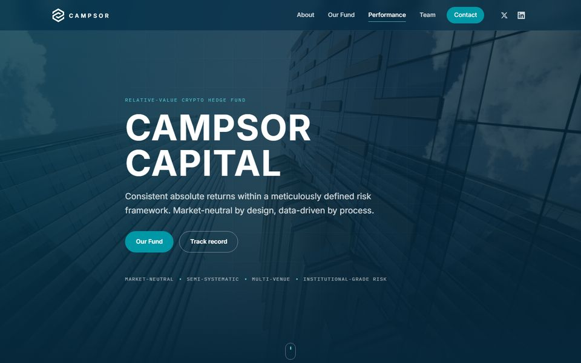
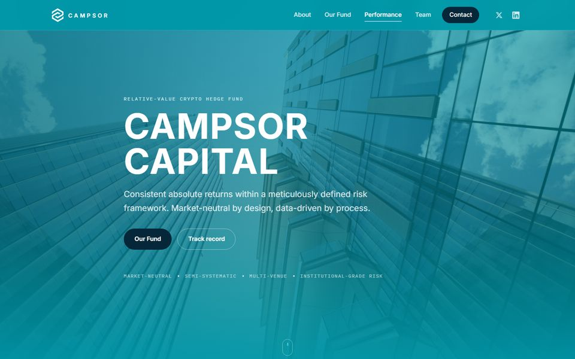
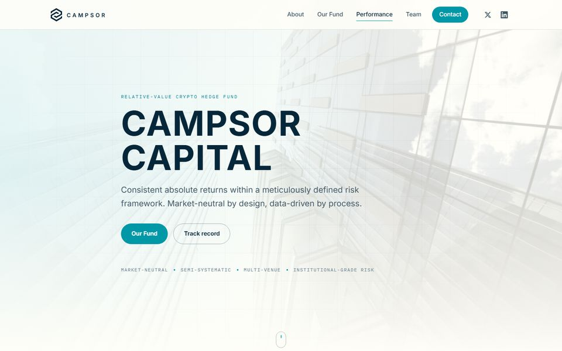
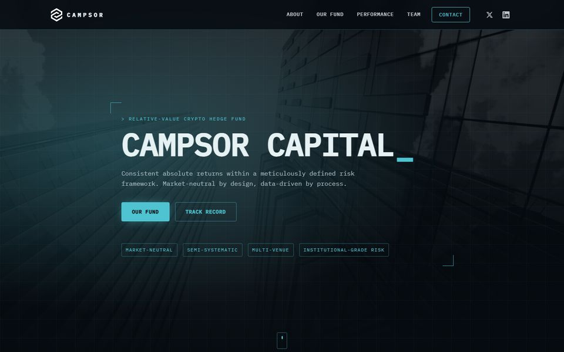
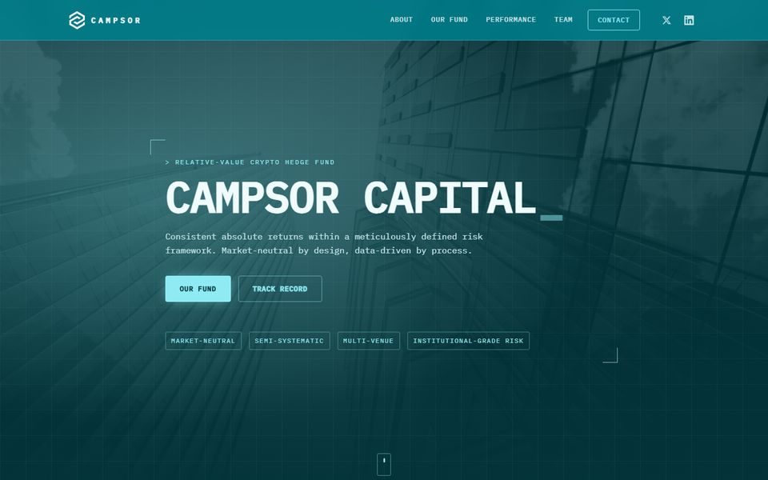
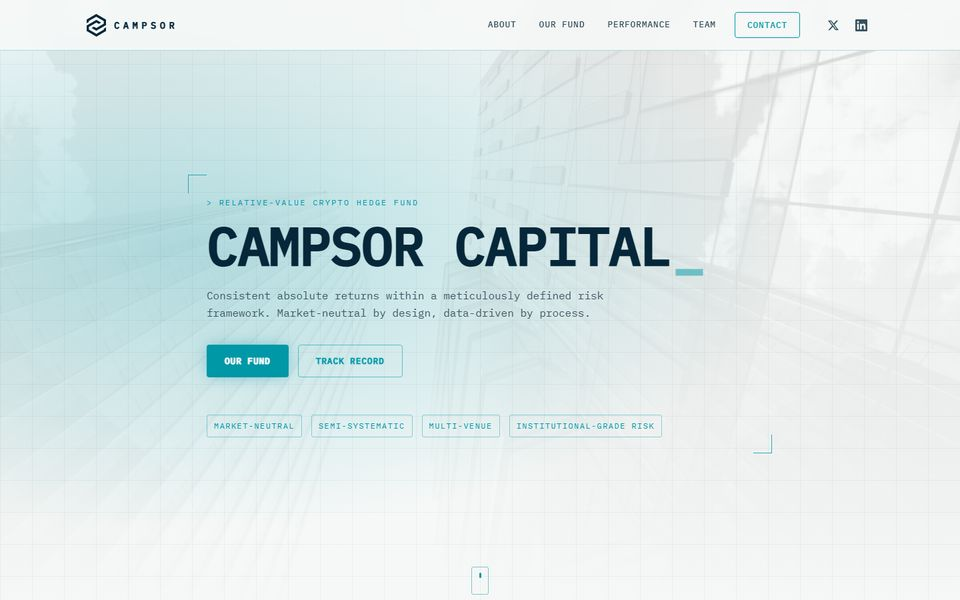
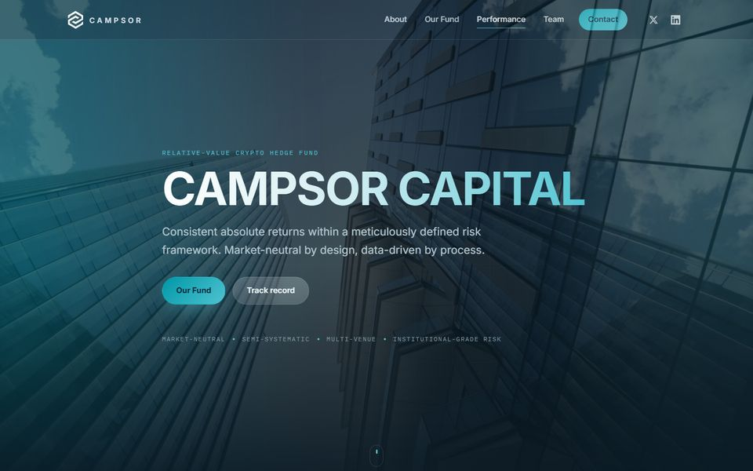
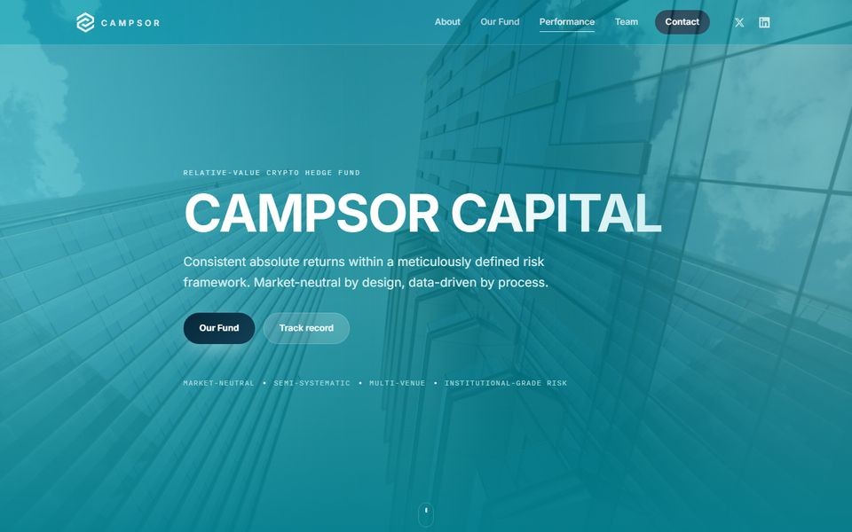
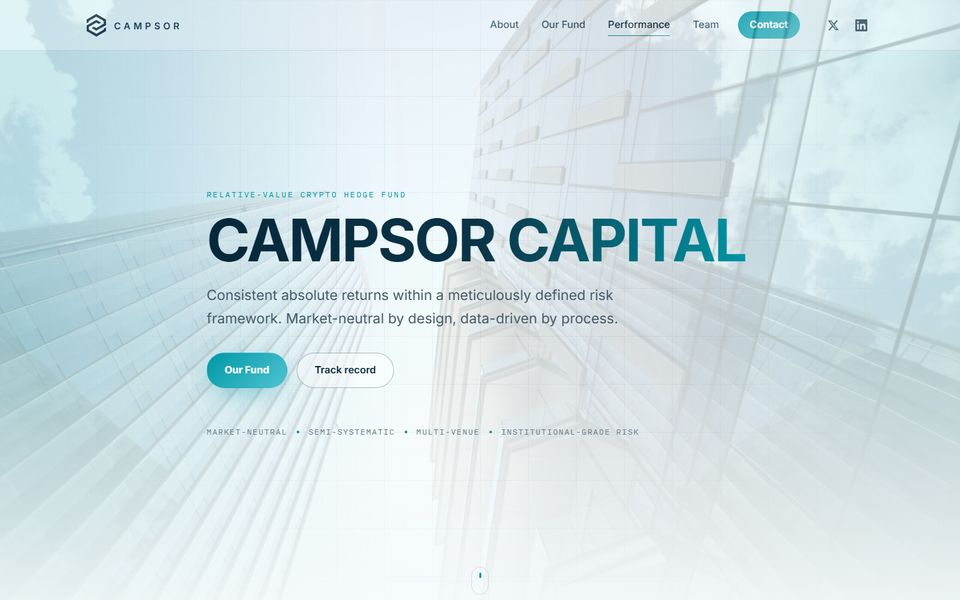

Website redesign
Three design families, each in three colourways: Navy, Teal (closest to the current palette) and Light. Same content and structure throughout. Open any variant and use the switcher in the bottom-right corner to compare without losing your place.
Institutional and restrained. Inter for text, monospace only for labels and numbers. Solid colour blocks, thin borders, a subtle network animation in the hero.

Deep navy hero and Hedge section, teal accents, off-white content sections.

Teal header, hero and sections as on the current site, navy buttons. The familiar palette, modernised.

Airy off-white pages, teal blocks for emphasis, navy contact section. Closest to a traditional asset manager.
Data-desk aesthetic: everything in monospace, uppercase headings, grid and scanlines in the background, corner brackets on cards, blinking cursor, glowing performance curve.

Near-black background with cyan accents. The darkest and most technical of the nine.

Deep teal background with mint accents and a teal header. Terminal feel in the house colour.

Paper-white blueprint: navy monospace text, teal accents, light grid. Technical but bright.
Contemporary digital-asset feel: a slowly drifting gradient mesh behind frosted-glass panels, gradient wordmark and buttons, soft rounded corners.

Deep-sea navy mesh with teal and indigo glows, dark glass panels.

Teal-dominant mesh with light glass panels, white accents and navy buttons. The boldest use of the house colour.

Pale mesh of teal and celeste on white, bright glass panels, navy-to-teal gradient wordmark.
Direct links: ?theme=navy, teal, light, tech, tech-teal, tech-light, aurora, aurora-teal, aurora-light. The last choice is remembered in the browser.